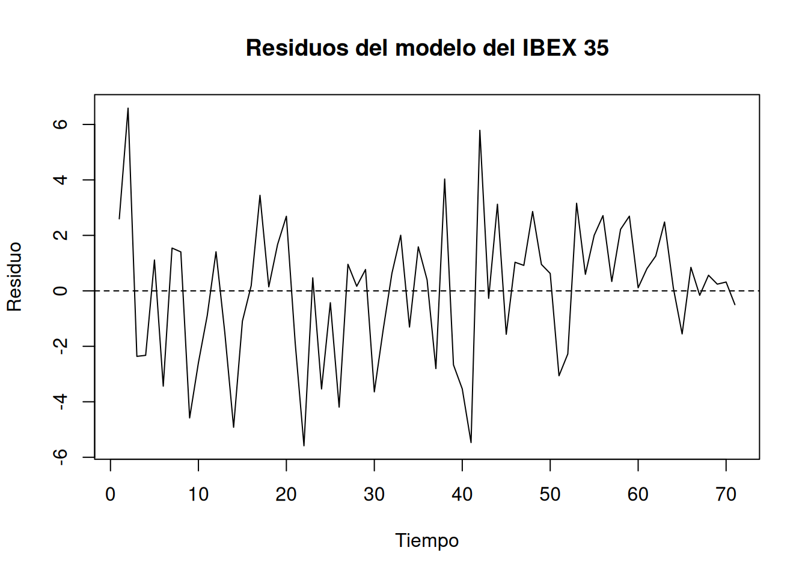

Código
plot(
residuos,
type = "l",
main = "Residuos del modelo del IBEX 35",
xlab = "Tiempo",
ylab = "Residuo"
)
abline(h = 0, lty = 2)
Al finalizar este tema, el estudiante será capaz de:
En el modelo lineal general,
\[ \mathbf{y} = \mathbf{X}\boldsymbol{\beta}+\mathbf{u}, \]
uno de los supuestos clásicos establece que las perturbaciones aleatorias de distintas observaciones no están correlacionadas entre sí. En concreto, suponemos que \(Var(\mathbf{u})=\sigma^2\mathbf{I}\) que implica tres condiciones:
Las perturbaciones tienen media cero: \(E(u_t)=0\)
Las perturbaciones presentan una varianza constante \(Var(u_t)=\sigma^2\)
Las perturbaciones correspondientes a diferentes observaciones están incorrelacionadas: \(Cov(u_t,u_s)=0\qquad t\neq s.\)
La tercera condición es especialmente importante cuando trabajamos con datos de series temporales, donde las observaciones están ordenadas cronológicamente.
Existe autocorrelación cuando las perturbaciones correspondientes a distintos momentos del tiempo están correlacionadas: \(Cov(u_t,u_{t-k})\neq 0,\qquad k>0.\)
Por tanto, mientras que en la heteroscedasticidad estudiábamos una modificación de la varianza de las perturbaciones, en la autocorrelación estudiamos una modificación de las covarianzas entre perturbaciones de distintos períodos.
En presencia de autocorrelación podemos escribir:
\[ Var(\mathbf{u})=\sigma^2\mathbf{\Omega}, \]
donde \(\mathbf{\Omega}\) recoge la estructura de covarianzas entre las perturbaciones.
Por ejemplo:
\[ Var(\mathbf{u})= \begin{pmatrix} \sigma^2 & \sigma_{12} & \cdots & \sigma_{1n}\\ \sigma_{21} & \sigma^2 & \cdots & \sigma_{2n}\\ \vdots & \vdots & \ddots & \vdots\\ \sigma_{n1} & \sigma_{n2} & \cdots & \sigma^2 \end{pmatrix}. \]
La diagonal principal recoge las varianzas de las perturbaciones, mientras que los elementos situados fuera de la diagonal representan sus covarianzas.
En ausencia de autocorrelación \(\sigma_{ij}=0\qquad i\neq j.\)
En presencia de autocorrelación, algunas de estas covarianzas serán diferentes de cero.
El problema es que una matriz completamente general requeriría estimar un número muy elevado de parámetros. Por ello, al igual que ocurre con la heteroscedasticidad, es necesario especificar una estructura concreta para las covarianzas. La estructura más sencilla que estudiaremos será la correspondiente a un proceso autorregresivo de primer orden, AR(1) que consiste en que las perturbaciones de un momento temporal dependen del momento temporal anterior.
La autocorrelación aparece fundamentalmente en modelos estimados con datos de series temporales. Sin embargo, su origen puede encontrarse tanto en la propia naturaleza del fenómeno como en una especificación incorrecta del modelo.
Esto puede provocar que los factores no incluidos explícitamente en el modelo también presenten persistencia temporal y, por tanto, que las perturbaciones estén correlacionadas.
Ejemplo: Supongamos que analizamos la evolución del IBEX 35 y omitimos factores como la incertidumbre internacional, la evolución de los tipos de interés o las expectativas de los inversores. Aunque estas variables no aparezcan explícitamente en el modelo, sus efectos pueden persistir durante varios días. En consecuencia, pueden generar un patrón temporal en los residuos.
\[ Y_t=\beta_1+\beta_2X_{2t}+\beta_3X_{3t}+u_t, \]
pero estimamos:
\[ Y_t=\alpha_1+\alpha_2X_{2t}+v_t. \]
La variable \(X_{3t}\) queda incorporada en la perturbación:
\[ v_t=\beta_3X_{3t}+u_t. \]
Si \(X_{3t}\) presenta dependencia temporal, la perturbación \(v_t\) también la presentará.
Por tanto, una variable relevante omitida puede generar autocorrelación incluso cuando la perturbación del modelo correctamente especificado sea incorrelacionada.
Especificación incorrecta de la forma funcional: También puede aparecer autocorrelación cuando la relación entre las variables no se especifica correctamente. Por ejemplo, si la relación verdadera entre una variable financiera y una variable explicativa presenta una tendencia no lineal y estimamos únicamente una relación lineal, parte de esa estructura quedará recogida en los residuos. Si además esa estructura presenta un patrón temporal, los residuos pueden mostrar autocorrelación.
Transformaciones y manipulación de los datos: La construcción de variables mediante medias, interpolaciones, agregaciones o determinadas técnicas de suavizado puede introducir relaciones artificiales entre observaciones consecutivas. Por ello, antes de interpretar una autocorrelación como un fenómeno económico, conviene comprobar también cómo se han construido y transformado los datos.
Variables dependientes retardadas: La inclusión de retardos de la variable dependiente es habitual en modelos económicos y financieros: \(Y_t=\alpha+\beta X_t+\gamma Y_{t-1}+u_t.\) Este tipo de modelos introduce explícitamente una relación temporal y requiere especial atención en los procedimientos de detección de autocorrelación.
La autocorrelación, al igual que la heteroscedasticidad, no implica necesariamente que los estimadores MCO dejen de ser insesgados bajo los supuestos adecuados de exogeneidad. Sin embargo, dejan de ser eficientes dentro de la clase de estimadores lineales e insesgados.
Las principales consecuencias son:
En consecuencia, la presencia de autocorrelación no debe interpretarse únicamente como un problema de los coeficientes estimados. El problema fundamental para la inferencia está en la estimación incorrecta de sus varianzas.
La detección de la autocorrelación puede abordarse mediante:
Los métodos gráficos permiten obtener una primera impresión sobre el comportamiento temporal de los residuos, mientras que los contrastes permiten formalizar estadísticamente la existencia de autocorrelación.
Por el contrario, pueden aparecer:
Gráfico de residuos frente a su primer retardo: Otra posibilidad consiste en representar \(e_t\) frente a $ e_{t-1}$.
Una nube de puntos sin estructura clara es compatible con la ausencia de autocorrelación.
Una tendencia creciente sería indicativa de autocorrelación positiva, mientras que una tendencia decreciente sería compatible con autocorrelación negativa.
El contraste de Durbin-Watson es uno de los procedimientos clásicos para detectar autocorrelación de primer orden. Se parte del modelo \(u_t=\rho u_{t-1}+v_t\) donde \(v_t\) es una perturbación incorrelacionada. El contraste plantea:
\[ H_0:\rho=0 \]
frente a las alternativas:
\[ H_1:\rho>0 \]
para autocorrelación positiva, o
\[ H_1:\rho<0 \]
para autocorrelación negativa.
El estadístico de Durbin-Watson es:
\[ d= \frac{\sum_{t=2}^{n}(e_t-e_{t-1})^2} {\sum_{t=1}^{n}e_t^2}. \]
De forma aproximada:
\[ d\approx2(1-\hat{\rho}). \]
Por tanto:
El paquete lmtest proporciona la función dwtest().
El contraste de Ljung-Box permite analizar conjuntamente varias autocorrelaciones. Mientras que Durbin-Watson se centra en la autocorrelación de primer orden, Ljung-Box permite comprobar si existe autocorrelación hasta un determinado número de retardos. La hipótesis nula es:
\[ H_0: \rho_1=\rho_2=\cdots=\rho_m=0. \]
La alternativa establece que al menos una de esas autocorrelaciones es diferente de cero.
Para modelizar la autocorrelación utilizaremos como referencia un proceso autorregresivo de primer orden:
\[ u_t=\rho u_{t-1}+v_t, \]
donde:
\[ E(v_t)=0, \qquad Var(v_t)=\sigma^2, \]
y las perturbaciones \(v_t\) están incorrelacionadas.
El parámetro \(\rho\) mide la intensidad de la dependencia entre perturbaciones consecutivas.
Si \(|\rho|<1\), se obtiene:
\[ Cov(u_t,u_{t-k})=\rho^k\sigma^2. \]
Por tanto, las correlaciones entre perturbaciones separadas por varios períodos disminuyen con la distancia temporal:
\[ \rho,\quad \rho^2,\quad \rho^3,\quad \ldots \]
La matriz de correlaciones correspondiente es:
\[ \mathbf{\Omega}= \begin{pmatrix} 1 & \rho & \rho^2 & \cdots & \rho^{n-1}\\ \rho & 1 & \rho & \cdots & \rho^{n-2}\\ \rho^2 & \rho & 1 & \cdots & \rho^{n-3}\\ \vdots & \vdots & \vdots & \ddots & \vdots\\ \rho^{n-1} & \rho^{n-2} & \rho^{n-3} & \cdots & 1 \end{pmatrix}. \]
Esta parametrización simplifica considerablemente el problema, ya que en lugar de tener que estimar todas las covarianzas de la matriz, únicamente necesitamos estimar \(\rho\) y \(\sigma^2\), además de los parámetros del modelo.
Una vez identificada la estructura de autocorrelación, podemos transformar el modelo para obtener perturbaciones incorrelacionadas. Partimos de:
\[ Y_t= \beta_1+\beta_2X_{2t}+\cdots+\beta_kX_{kt}+u_t \]
y suponemos \(u_t=\rho u_{t-1}+v_t\). Multiplicando el modelo retardado por \(\rho\) y restándolo del modelo original obtenemos:
\[ Y_t-\rho Y_{t-1}=\beta_1(1-\rho)+\beta_2(X_{2t}-\rho X_{2,t-1})+\cdots+\beta_k(X_{kt}-\rho X_{k,t-1}) +v_t. \]
Como: \(u_t-\rho u_{t-1}=v_t,\) las perturbaciones del modelo transformado son incorrelacionadas.
Para \(t>1\):
\(Y_t^*=Y_t-\rho Y_{t-1},\)
\(X_{jt}^*=X_{jt}-\rho X_{j,t-1}.\)
El término independiente también debe transformarse: \(1^*=1-\rho.\)
Este último punto es importante: no se debe mantener el término independiente sin transformar cuando se aplica esta transformación al modelo.
En la práctica, \(\rho\) es desconocido y debe estimarse. El procedimiento iterativo de Cochrane-Orcutt sigue, de forma simplificada, los siguientes pasos:
Una estimación inicial habitual de \(\rho\) es:
\[ \hat{\rho}=\frac{\sum_{t=2}^{n}e_te_{t-1}}{\sum_{t=1}^{n}e_t^2}. \]
A continuación se implementa el procedimiento directamente en R, siguiendo paso a paso las etapas anteriores:
Y <- datos$Rend_IBEX
X1 <- datos$Rend_SP500
X2 <- datos$Rend_EUROSTOXX50
n <- length(Y)
rho_hat <- 0
modelo_ibex_co <- modelo_ibex
for (iter in 1:50) {
e <- residuals(modelo_ibex_co)
rho_nuevo <- sum(e[-1] * e[-length(e)]) / sum(e^2)
Y_t <- Y[-1] - rho_nuevo * Y[-n]
X1_t <- X1[-1] - rho_nuevo * X1[-n]
X2_t <- X2[-1] - rho_nuevo * X2[-n]
modelo_ibex_co <- lm(Y_t ~ X1_t + X2_t)
if (abs(rho_nuevo - rho_hat) < 1e-6) break
rho_hat <- rho_nuevo
}
rho_hat[1] -0.008107865summary(modelo_ibex_co)
Call:
lm(formula = Y_t ~ X1_t + X2_t)
Residuals:
Min 1Q Median 3Q Max
-5.6152 -1.5667 0.4108 1.4660 6.3744
Coefficients:
Estimate Std. Error t value Pr(>|t|)
(Intercept) 0.7079 0.3163 2.238 0.0286 *
X1_t -0.2188 0.1126 -1.944 0.0561 .
X2_t 1.0624 0.1099 9.663 2.53e-14 ***
---
Signif. codes: 0 '***' 0.001 '**' 0.01 '*' 0.05 '.' 0.1 ' ' 1
Residual standard error: 2.545 on 67 degrees of freedom
Multiple R-squared: 0.7274, Adjusted R-squared: 0.7192
F-statistic: 89.38 on 2 and 67 DF, p-value: < 2.2e-16El bucle repite la transformación hasta que dos estimaciones sucesivas de \(\rho\) difieren en menos de una tolerancia prefijada (1e-6), tal como se ha descrito en el procedimiento de Cochrane-Orcutt. El resultado permite comparar los coeficientes obtenidos mediante MCO con los obtenidos después de corregir la autocorrelación. Nótese que el intercepto del modelo transformado corresponde a \(\beta_1(1-\rho)\), tal como se explicó anteriormente.
Una limitación del procedimiento de Cochrane-Orcutt es que pierde la primera observación. El procedimiento de Prais-Winsten modifica la transformación de la primera observación para conservarla.
Para \(t>1\) se mantiene:
\(Y_t^*=Y_t-\rho Y_{t-1},\)
mientras que la primera observación recibe una transformación específica.
Este procedimiento resulta especialmente útil cuando la muestra no es muy grande y la pérdida de una observación puede ser relevante.